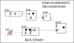
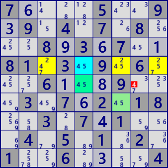

ALS Chain
ALS Chainは、ALSをRCCでループ状につなぐ解析アルゴリズムです。
ALS Chainのイメージ図に示すように、ALSがRCCのリンクで繋がった連を形成し、この連が次の性質をもつとき、Lockedが生じます。
- 最初と最後のALSが、RCCとは異なる数字zを候補に持つ。
- ALSの外部に、最初と最後のALS内の全てのzをカバーするセルがある。
なお、ALSの連で重なりがある場合も成立します。

ALS Chain は、数独パズルの１つの局面について、起点とするセル・数字からのチェインが極めて多く見つかります。
多数の解が存在することから、GNPX ver6.0 では、いくつかなタイプを設けました。
- 1 起点について、1 チェインパターン(探索で最初に見つかったパターン)
- ALSの連りに重なりを許容する。
- ALSの連に制約をかけない、全てのパターン(数100の解が求まることもあります）。
ALS Chainの例です。

ALS Chain
Stem : r5c8 #4 ->
ALS 1: r6c7 #45 -> #5
ALS 2: r4c379 #2457 -> #4
ALS 3: r4c5 #45 -> #5
ALS 4: r5c5 #45 -> #5
Excluded cells#no : r5c8 #4
 ALS Chain
ALS ChainStem : r6c7 #3 ->
ALS 1: r1c7 #13 -> #1
ALS 2: r1c56 #148 -> #4
ALS 3: r3c4 #14 -> #1
ALS 4: r5c4 #14 -> #4
ALS 5: r5c9 #34 -> #4
Excluded cells#no : r6c7 #3
Paste the next 81 digits onto the GNPX/grid and solve with /Solve/MultiSolve/
7....5..9.9.4.7.8...8.3.7..81.3.9.6...6...9...3.7.2.18..3.7.1...4.5.1.2.1..6....4
6..9....5.4.5.6.7...5.3.2...6.8.3.91..8...6..91.7.2.5...6.7.4...7.3.5.6.2....4..7